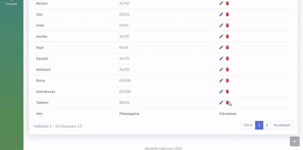
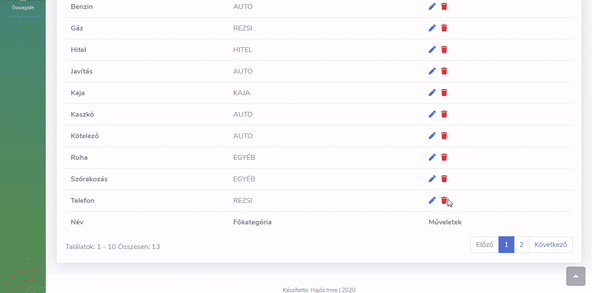

Finance application
 

Finance application that I specifically created for my family. This program has been designed to systemize current monthly costs and revenues as well as easily demonstrating these data in a chart. The system shows the status of costs with different colors for easy usability.
Thechnologies used for this application:
Java Spring Boot JPA Hibernate HTML5 Js, JQuery, Ajax Bootstrap CSS3 Github